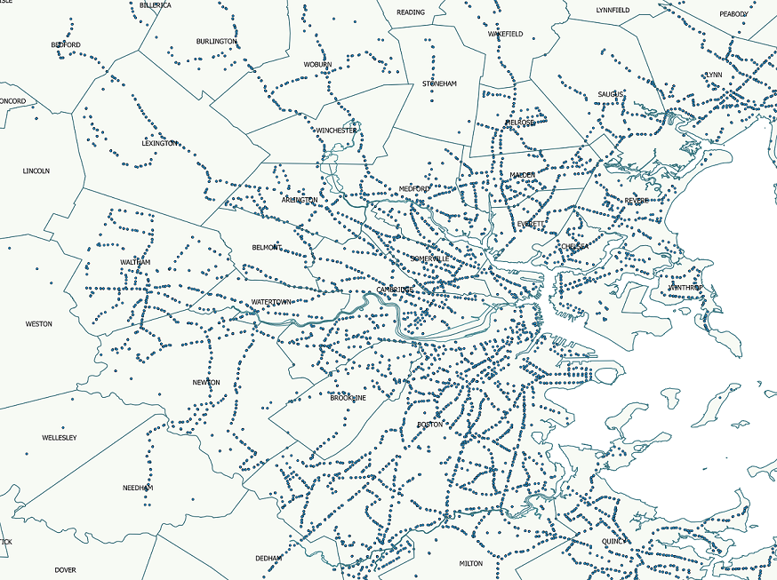
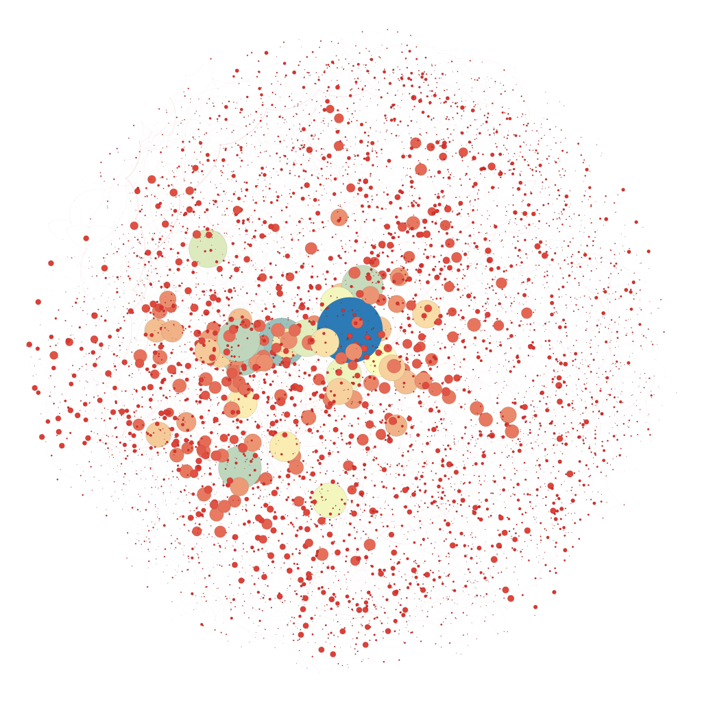
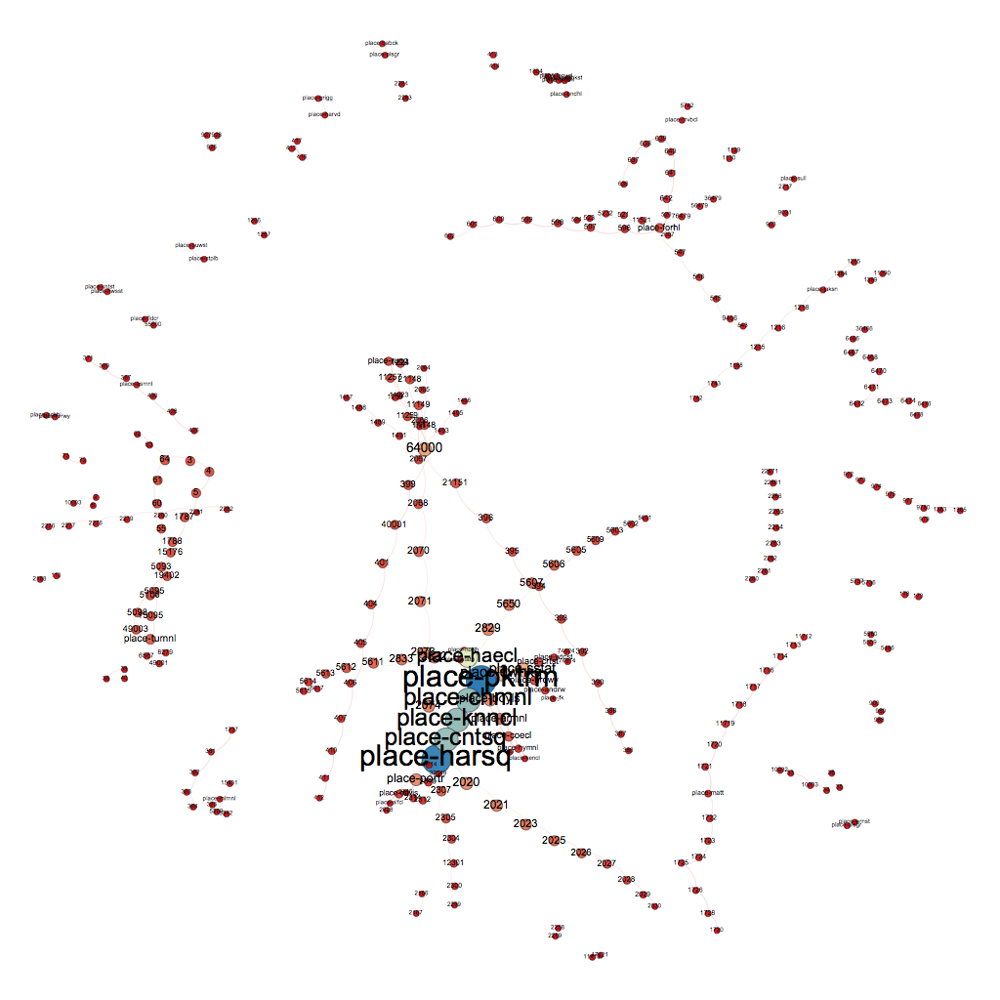
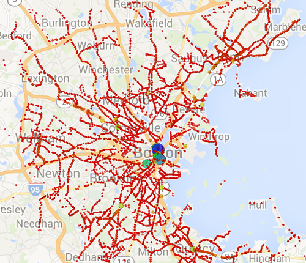

This network represents the connections that can be made from the towns surrounding the Boston area with the MBTA bus system, without a transfer. The nodes are sized by the populations of the town, and the color is based on the total number of stops in each town. Of the 351 towns in Massachusetts, 86 of them contain a bus stop, and there are a total 483 connections between them, or on average 6 links per node.

This network represents a hub and spoke model for transportation systems. All roads lead to Boston, and then commuters can make connections to other towns.
With the City of Boston’s MBTA GTFS data, we constructed a network with all of the individual bus stops in the dataset. In this network, each node represents a stop, and a directed edge connects two stops if a trip goes from the first stop to the second in sequential order (all stations with a parent station were grouped under the parent station as they represent the same physical location). The edge weight is the number of such trips. The nodes were then all sized and colored based on their betweeness centrality, to see which stops are most important in holding the Boston MBTA network together. These stops could be good targets when prioritizing maintenance work, and snow clearing.

This same network can be filtered to reveal only highly travelled routes. The below graph is filtered to include only nodes with an edge weight greater than or equal to 2,000. The network therefore only reveals routes with at least 2,000 distinct trips travelled in the stop_times.csv file.

The below map reveals all the stops, sized and colored in the same way, displayed geographically.
